Archery
Archery
As an Athlete...
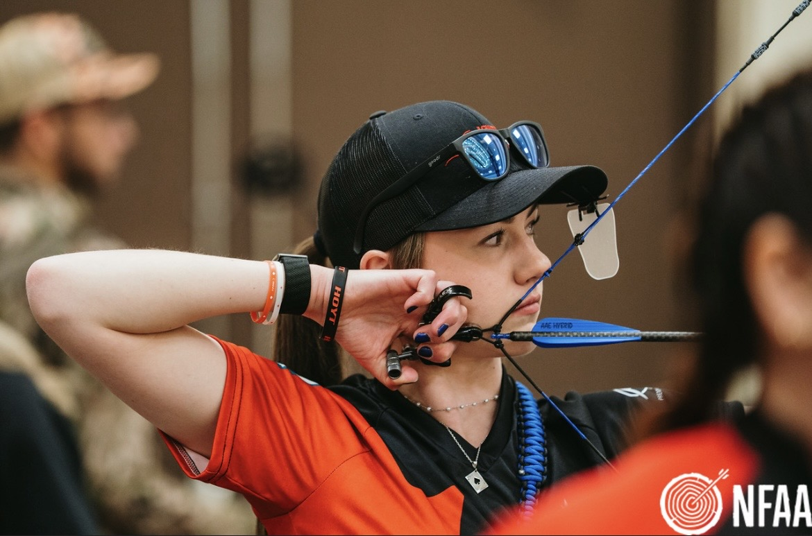
I am an accomplished competitive archer with a strong record of national and international success. I have represented Canada at a number of events, including the 2022 Youth Pan American Championships, the 2023 Youth World Championships and the 2025 FISU World University Games. On home soil, I was the 2024 u21 Compound Women's Canadian Champion, and I have been ranked top 10 nationally since 2019. Within Alberta, I have been on Archery Alberta's High performance team since 2022. I was also pleased to recieve the Kaitlin Wiley Junior Female Athlete of the Year Award for my performance during the 2023 season.
As a Coach...

In addition to competing as an athlete, I am also a certified coach. I coach at my local junior club, and I have been head coach of two teams to the Alberta Winter Games (2024, 2026). I have gained a lot of knowledge and experience through my own experiences, and I love sharing that with developing athletes!
Being an archery coach has also helped me to reflect on my own shooting, and how I once was in the position of the archers I coach today.
Archery Gallery
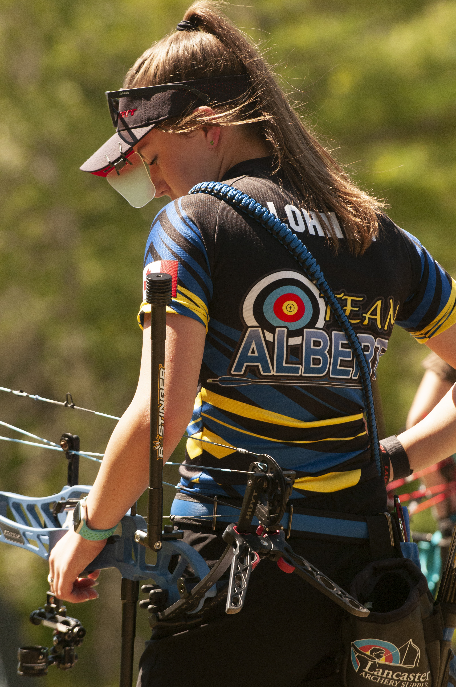
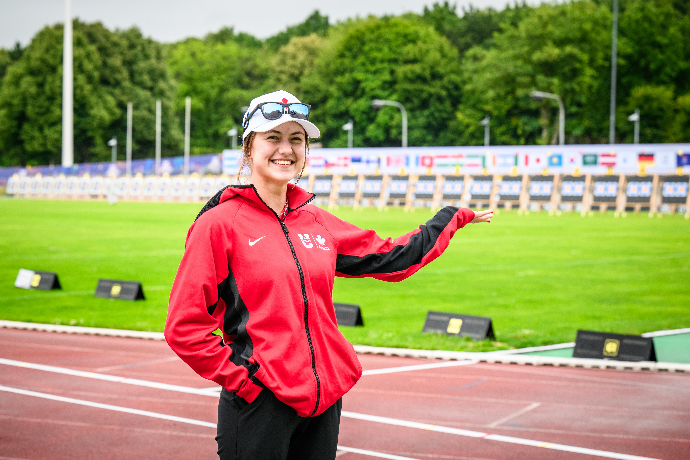
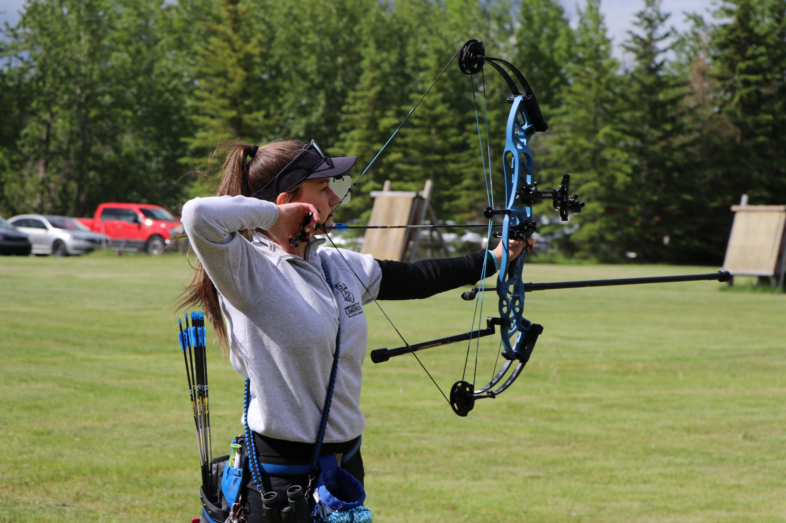
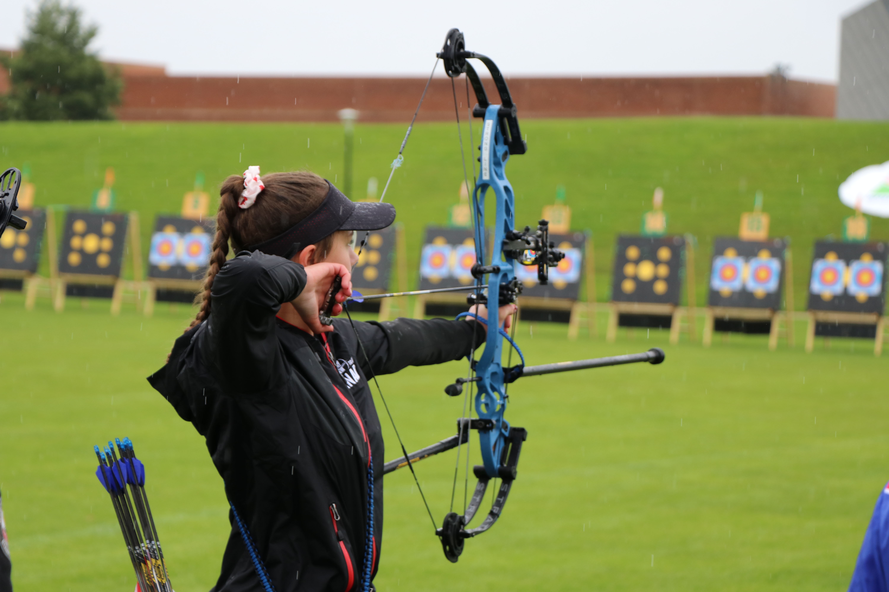
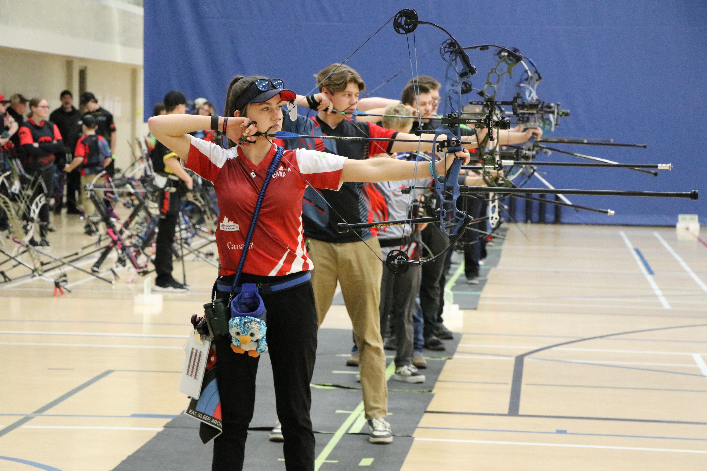
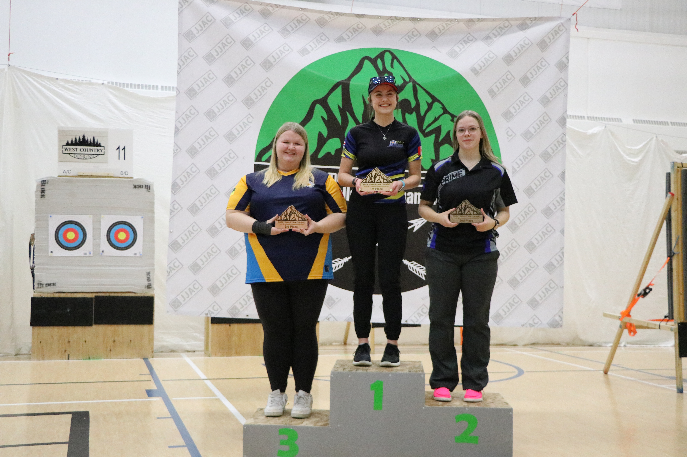
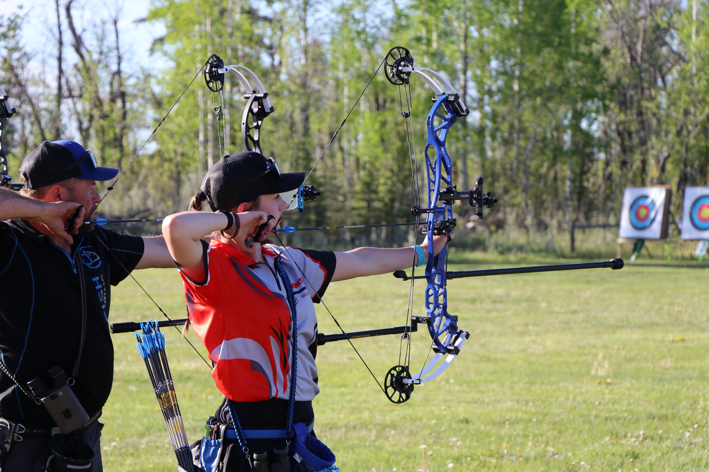
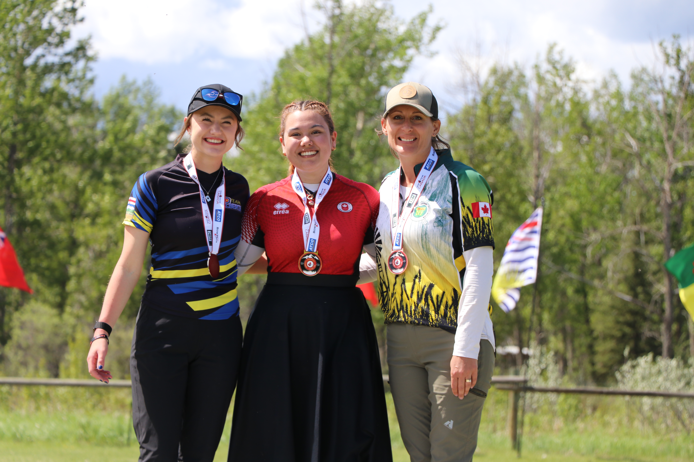
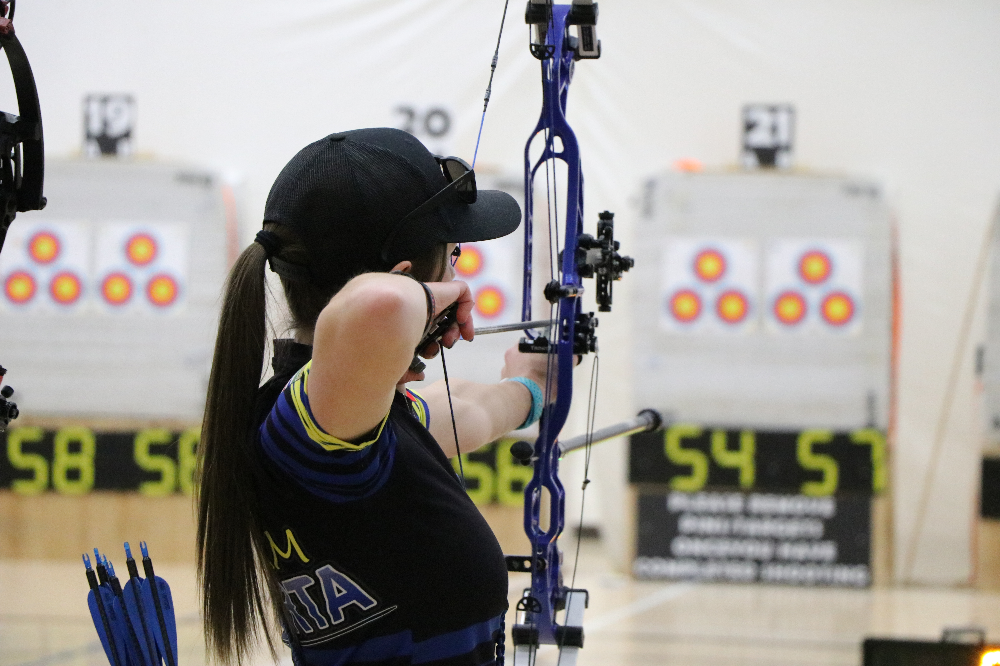
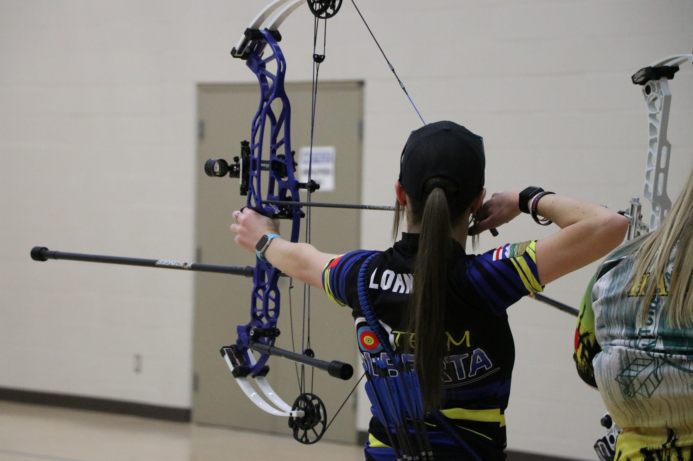
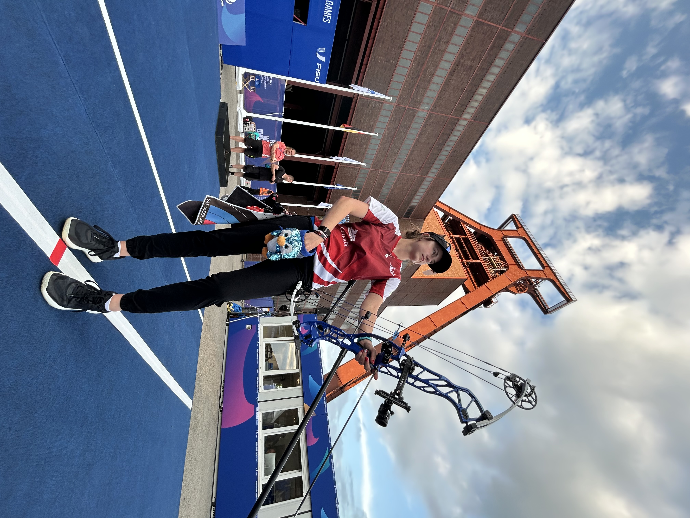
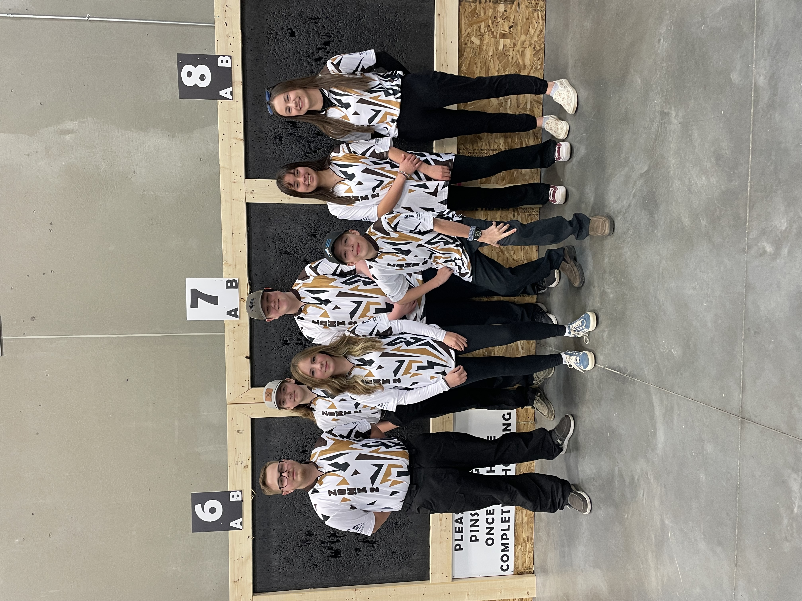